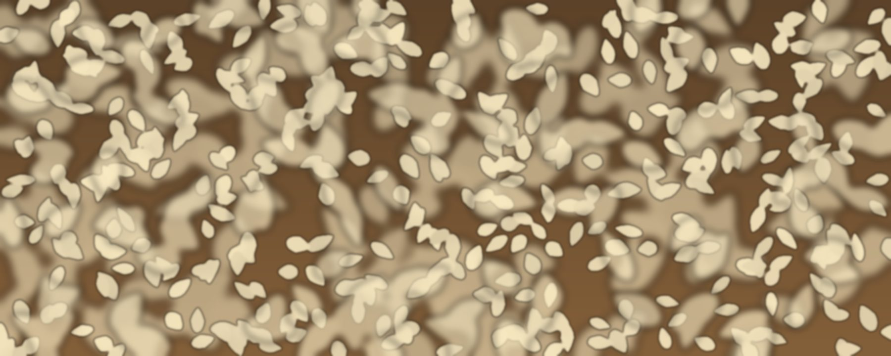

Sesame, also called benniseed, is the most significant commercial crop of Nigeria's middle belt. The seeds are valued for their oil and are used whole and hulled in food products.

Where it is grown
Sesame is grown across the middle belt and the north. Five Acres Ltd sources sesame from the North-Central, North-West and North-East regions, with potential sourcing areas including Benue, Nasarawa and Kogi in the North-Central, and Kano, Jigawa and Kaduna in the North-West.
Harvest and seasons
Sesame is planted in the rainy season, usually around June to August, and harvested after the rains, typically from about October to January. Timing varies by area and by year.
Uses and demand
Sesame seeds are pressed for edible oil, and used whole or hulled in bakery and confectionery products and in pastes such as tahini.
Typical buyers are exporters and processors, who look for clean, dry, consistent seed.
Quality: what we check
Buyers want consistent quality, documentation and reliability, not only volume. For sesame seeds, our checks include:
- Purity
- Foreign materials and contamination are kept to a minimum.
- Moisture
- Monitored through storage and transport.
- Colour and appearance
- Consistent lots that meet the buyer's specification.
- Oil content
- Often specified by buyers and recorded where required.
- Cleanliness and storage
- Proper storage practices preserve quality.
- Documentation
- Quality information is recorded for each lot.
How Five Acres Ltd handles it
Growing areas and harvest windows vary by season and region. Contact us for current availability and specifications.